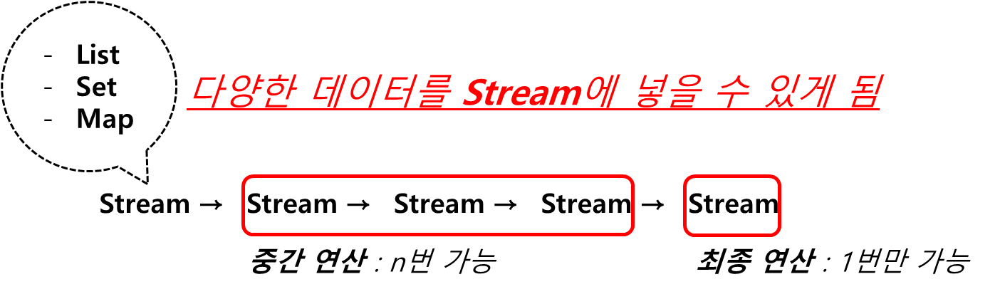
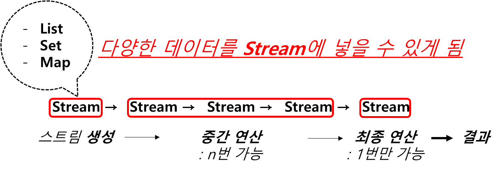
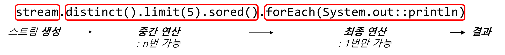

Ch14-15~16. stream
0. 목차
Chapter14. 람다와 스트림
Ch14 - 15. 스트림(stream)
Ch14 - 16. 스트림의 특징
Ch14 - 15. 스트림(stream)
▶ 스트림(stream)이란?
▷ stream : 청계천 같은 천
- stream은 청계천이 흐르듯 데이터가 연속적으로 흐를 수 있게 해 주는 것
[데이터 소스] → [stream] → [중간 연산] → [최종 연산]
▷ 다양한 데이터 소스를 표준화 된 방법으로 다루기 위한 것
- 데이터 소스 : 컬렉션이나 배열과 같은 다양한 데이터를 담고 있는 것
- 표준화 : 컬렉션 프레임웍 같은 것이 컬렉션들을 표준화 하여 사용하려고 함
하지말 실패 List, Set, Map 성격이 다 달라서
▷ JDK1.8부터 표준화에 성공
- 컬렉션의 List, Set, Map를 Stream에 담을 수 있게 됨

▶ 스트림으로 변환
▷ list(컬렉션) → 스트림
String<Integer> intStream = list.stream();
- 컬렉션에는 stream()이 있음
Stream<T> Collection.stream() // stream()이 들어오면 Stream으로 다시 반환
▷ 배열 → 스트림
String<String> strStream = Stream.of(new String[]{"a", "b", "c"});
▷ 람다식 → 스트림
String<Integer> evenStream = Stream.iterate(0, n -> n + 2); // 0, 2, 4, 6...
String<Double> randomStream = Stream.generate(Math::random);
▷ 난수 → 스트림
IntStream intStream = new Random().ints(5); // 크키가 5인 난수 스트림
▶ 스트림이 제공하는 기능
▷ 중간 연산 : 연산 결과가 스트림O, 0 ~ n번 가능
▷ 최종 연산 : 연산 결과가 스트림X, 1번만 가능(스트림의 요소를 소모해서)


▷ 예시
// ① 스트림 생성
Stream<String> stream = Stream.of(strArr); // 문자열 배열이 소스인 스트림
// ② 중간 연산
Stream<String> filteredStream = stream.filter(); // 걸러 내기
Stream<String> distinctedStream = stream.distinct(); // 중복 제거
Stream<String> sortedStream = stream.sort(); // 정렬
Stream<String> limitedStream = stream.limit(5); // 스트림 자르기
// ③ 최종 연산
int total = stream.count(); // 요소 개수 카운트
Ch14 - 16. 스트림의 특징
▶ 스트림은 원본 변경하지 않는다!
▷ 스트림은 데이터 소스로부터 데이터를 읽기만 할 뿐 READ ONLY
▷ 변경하지 않음
java.util.List<Integer> list = Arrays.asList(1, 2, 3, 4, 5);
List<Integer> sortedList = list.stream().sorted() // list 정렬
.collect(Collectors.toList()); // 정렬 된 list를 새로운 List에 저장
System.out.println(list);
System.out.println(sortedList);
// console
[1, 2, 3, 4, 5] // list
[1, 2, 3, 4, 5] // sortedList, 데이터는 변경되지 않음
▶ 스트림은 일회용!
▷ 스트림은 Iterator과 같은 일회용
▷ 스트림 사용 후 또 필요하면 다시 생성하여 사용해야 함
strStream.forEach(System.out::println); // 최종 연산 : 모든 요소를 화면에 출력(스트림 요소 소모 끝)
int numOfStr = strStream.count(); // ERROR, 스트림은 위에서 이미 닫힘
// 다시 만들어서 스트림 사용
▶ 스트림은 지연된 연산을 수행!
▷ 최종 연산 전까지 중간 연산 수행 안 됨
▷ 스트림은 유한 스트림과 무한 스트림이 존재
IntStream intStream = new Random().ints(1, 46); // 1 ~ 45의 무한 스트림
IntStream distinct().limit(6).sorted() // 중간 연산, 중복 제거.자르기.정렬
.forEach(i -> System.out.print(i + ",")); // 최종 연산
- 이렇게 적어 놓았다고 해서 중간 연산을 바로 하는 게 아님,
체크만 해 두었다가 필요할 때 실행
▶ 스트림은 작업을 내부 반복으로 처리
▷ for문을 메서드 안에 감추어 forEach문으로 처리
▷ forEach문을 통해 코드가 간결해짐
// for문
for(String str : strList)
System.out.println(str);
// ↓↓↓↓ for문을 forEach문으로 변경 ↓↓↓↓
stream.forEach(System.out::println);
// forEach 메서드 안에 for문이 있음
void forEach(Consumer<? super T> action) {
Objects.requireNonNull(action); // 매개변수의 null 체크
for(T t : src) // 내부 반복, for문을 메서드 안으로 넣음
action.accept(T);
}
▶ 스트림의 작업을 병렬로 처리! - 병렬 스트림
▷ 멀티 쓰레드 기능
- 함수형 언어는 빅데이터 처리를 위한 것
- 즉 大작업 처리를 위한 것
- 이 때 멀티 쓰레드가 유용함
- 스트림도 大작업을 빨리 처리하기 위한 것으로 병렬 스트림을 제공
▷ parallel()을 붙여주면 병렬 스트림으로 변환 : 결과를 더 빨리 얻음
Stream<String> strStream = Stream.of("dd", "aaa", "CC", "cc", "bb");
int sum = strStream.parallel() // 병렬 스트림으로 전환(속성만 변경)
mapToInt(s -> s.length()).sum(); // 모든 문자열의 길이 합
스트림 → 병렬 스트림 : parallel()스트림 ← 병렬 스트림 : sequential()
▶ 기본형 스트림이란?
▷ 기본형 스트림의 종류
IntStreamLongStreamDoubleStream
▷ 오토박싱/언박싱의 비효율이 제거
Stream<T>에서T는 기본형X, 참조형OStream<Integer>는 기본형이 왔기 때문에 오토박싱으로 형변환 해 줌
1 -오토박싱→ new Integer(1)- 데이터가 많으면 오토박싱 해 주는 시간도 무시 못함
- 이럴 때, 기본형 스트림
IntStream사용하면, 오토박싱/언박싱 시간 단축
▷ 숫자와 관련 된 유용한 메서드를 Stream로 하는 것 보다 더 많이 제공
Stream<T>에서T가 숫자인지 아닌지 모름- 그래서
T는 숫자에 관해 제공해 줄 수 있는 게count()정도 - 그러나
기본형 스트림은 거의 숫자 - 그래서
기본형 스트림은count(), sum(), average()...더 많이 제공